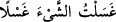

olup burası Ebû Temâm’a iktâ edilen bir arâzîdir. Yere vurmasının akabinde orada bir
kaynak kaynamağa başlayınca kendisine: “İşte yıkanacak ve içilecek soğuk bir su”
dedik.
Kâşifî der ki: Bu bir yıkanma yeridir, ya da kendisiyle yıkanılan bir sudur. Böylece
âyetteki (__WORD__) kelimesinin, Eyyûb’un içinde yıkanacağı mahal ve yardımıyla yıkanacağı
su anlamına geldiğine işâret edilmiştir. (__WORD__), yıkanmak demektir. (__WORD__)
ifâdesi, “üzerine su dökerek kirini giderdim” anlamına gelir. (__WORD__) “ve içilecek” yâni
“ey Eyyûb, içmek sûretiyle içinin iyileşeceği serin bir su!” demektir. (__WORD__), su veya
suyun dışındaki bir şey olsun, içilip kullanılan tüm akışkan maddelerdir. (__WORD__)
ifâdesindeki (__WORD__), sıfatın mevsufa ne kadar şiddetle bağlı bulunduğunu pekiştirmektedir.
Büyüklerden biri de bu âyeti şöyle açıklar: İşte bu, yıkanacak yâni kendisi yardımıyla
yıkanılacak bir su olup suyun mevzi ve zamanı, bedenin zâhirinin sıcaklığını gideren ve
bâtınının harâretini serinleten bir sudur.
Bu zât demek istiyor ki: Bu su, çekilen elemin aşırı harâretinden dolayı böyle serin
olmuştur. Allah Eyyûb’taki bu elemin helâk edici aşırılığını, suyun serinliğiyle teskin
etmiş, insan için faydalı olan harâreti yerinde bırakmıştır.
Üftâde namıyla tanınan Bursalı Şeyh (k.s.) de şu görüştedir: Bu âyetteki “su”dan
maksad, Allah Teâlâ’nın diriltmesini (ihyâ) sembolize etmektir. Aşağıdaki rivâyette
yağmur suyunun yağdırılmasından maksad da budur. Rivâyete göre kıyamet günü gelip
çattığında üzerine kırk sene yağmur yağdıktan sonra ölüler, tıpkı bitkiler gibi, yerden
bitmeye başlayacaklar.
İşte Eyyûb (a.s.) bu sudan yıkanmış, içmiş ve böylece hem içindeki hem de dışındaki
hastalıktan kurtulmuştur. Çünkü Allah Teâlâ bir kuluna rızâ nazarıyla baktığı zaman
kulun hastalığı şifâ bulur; sıkıntısı rahatlığa, cefâsı da vefâya dönüşür. Eyyûb da sağlıklı
bir şekilde ayağa kalkıp bir hülle giymiş; gençlik ve güzelliği eskisinden daha iyi olarak
geri dönmüştür.
İbn Abbas (r.a.) der ki: Eyyûb (a.s.) bu imtihanda gözünü hiç kırpmaksızın ve bir
taraftan öte tarafına dönmeksizin yedi sene yedi ay yedi gün yedi saat hareketsiz
kalmıştır. Nitekim Zühretü’r-riyâz’da da bu şekilde kaydedilir.
Sofyalı Şeyh Bâlî, Şerhu’l-Fusûs’ta şöyle der: Âyette şöyle bir işâret bulunmaktadır:
Allah Teâlâ, peygamberine çekmekte olduğu beden eleminin yok olmasını sağlayacak
bir suyun çıkmasını temin için ayağını yere vurmasını emretmiş olduğuna göre bu, bizim
vücûd arzımızdan da ruhânî hastalıklarımızın yâni bizi Hak’tan uzaklaştıran perdelerin
yok olmasını sağlayacak hayat suyu olan ‘Allah bilgisi’nin çıkmasını temin maksadıyla
bize de sülûk ve mücâhede emrinin verilmesi anlamına gelir.
Şeyh devamla şöyle der: Bu âyet-i kerimede şöyle latîf bir sır daha vardır: Takvâ,
mücâhede ve riyâzat yolunun sâlikleri bir yerde toplanıp yüksek sesle Allah’ı
zikretmeğe başlayıp da herhangi bir hareket tarzıyla ayaklarını yere vurunca, bu
hareketlerinden maksadlarının rûhânî elemlerini gidermek olması durumunda, böyle bir